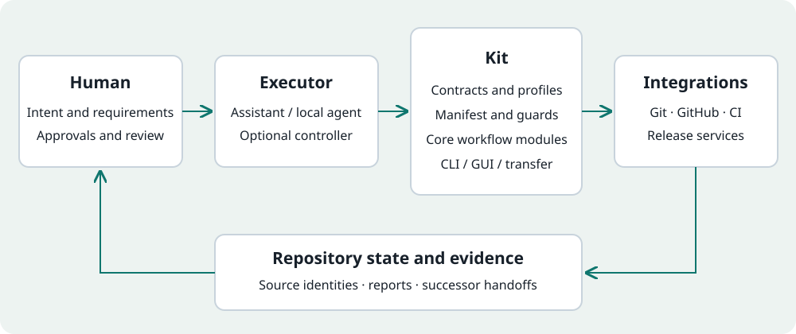

Keep AI-assisted work accountable to the repository.
The Kit keeps project context and work results in the repository, then checks defined workflow rules around your chosen AI assistant. You still own the requirements and the decisions.
Current package: 1.1.5. The facts below are generated from this checkout; dated observations retain their original scope.
What that means in everyday work
A contract names the permitted action and its conditions. A gate is an executable check of those conditions. Evidence records the observed result and its scope. A handoff gives a later session the current repository context and next step.
For example, you can discuss a fix in an ordinary browser chat, run the bounded local workflow, review its recorded checks and continue in another chat from the generated successor package. The assistant does not need direct shell access: File Transfer and Copy and Paste are supported paths, alongside Agent Direct and the GUI.
Executable checks add something beyond a prompt or documentation template: they can report a block, check a specific revision or verify required evidence. They do not validate every requirement semantically. A test count, choice of Python library, release DOI or community size alone does not establish engineering quality or deployment suitability.
Solo maintainers and small teams using AI across multiple sessions, models or executors, especially where documentation, review, release decisions and project history must remain inspectable.
Git-backed software and documentation repositories are the architectural target. Python is a reference profile, not a promise that every language or repository type has equally mature support.
Consider the overhead
Start with a bounded adoption
The Kit expects Git knowledge, explicit contracts and a maintainer willing to inspect evidence. For a disposable experiment, the state files and closeout steps may cost more than they help.
It does not supply the coding model, replace your IDE, decide whether requirements are correct or guarantee a safe change merely because checks are green.
What the mechanisms are intended to improve
Benefits with explicit tradeoffs
Need
Kit mechanism
Practical benefit
Cost or limit
Continue after a chat switch
Repository state and generated successor packages
Recover inspectable context without relying solely on chat memory.
State and projections must stay current; stale evidence can block.
Review a bounded action
Command manifest, safety metadata and guarded workflows
Make the requested action and its effects easier to inspect.
Guards cover defined rules; they cannot detect every semantic error.
Close PRs and releases consistently
Expected-head checks, CI readiness and release consent
Keep identity, approvals and evidence associated with the operation.
GitHub state, network availability and configured CI remain dependencies.
Change executor
Versioned contracts, evidence and transport boundaries
Keep project context outside a particular assistant.
Executor integrations need their own validation and permissions.
These are mechanism-based benefits, not measured claims of faster development, zero drift, fewer defects or lower total cost. The Kit workflow does not require an LLM API; your chosen assistant, hosting and CI can still incur costs.
Governance and execution are separate responsibilities
How the Kit works

On narrow screens, scroll the diagram horizontally. Logical responsibilities. A guard validates defined contracts; it does not prove general software correctness.
Define intent. The maintainer owns requirements, risk acceptance and authorization.
Inspect repository truth. The executor reads the project contract, architecture, current state and canonical handoff.
Choose a bounded action. Manifest-backed commands and profiles expose checks, available operations and effects.
Validate and execute. Focused Python modules implement the rules; CLI and GUI surfaces call the same governed operations. Git and CI remain separate systems.
Record and hand off. Reports, source identities and generated successor packages preserve what happened and what remains open.
Authority and state
Repository contracts, profiles, policy packs and canonical state define the process. Doctor and related gates check configured contracts and known drift. The command manifest feeds CLI discovery, GUI grouping and public command views.
Adapters and integrations
CLI, GUI and transfer routes are interfaces. Focused core modules implement governed behavior; adapters connect Git, GitHub, CI and release services. Toolchain-specific behavior belongs in profiles or adapters.
Documentation and assurance
Documentation governance and bounded DPA checks address document authority, freshness and evidence. They do not establish arbitrary foreign-repository conformance or formal correctness of the product. PAA appears below as planning status, not a shipped proof engine.
Public interface, private implementation possible
Working with a local controller
A local controller can present work orders, transport a bounded request to an assistant, invoke allowed Kit commands and return their structured results. It can be private; the public Kit does not require publication of that controller's source.
The controller must preserve the command contract, action identity, approval boundaries, exit code and structured verdict. A failed or ambiguous result must remain visible. It must not invent a successful receipt, bypass a Kit block or become a competing governance authority.
File Transfer, Copy and Paste, Agent Direct and the Kit GUI are the public interaction paths. A separate private controller is an integration example, not an additional public Kit product or a claim of universal plug-and-play compatibility.
A bounded interaction
Human selects a task and its permissions.
Controller sends repository context and a bounded request.
Assistant proposes a change or next action.
Kit validates the applicable command and repository state.
Authorized execution produces evidence; blocked or failed states stop the flow.
Controller displays the result and the next permitted step.
Self-hosting exercises the Kit's own repository workflow. Greenfield tests probe first adoption and first-cycle closeout. Brownfield work probes an existing project's constraints. Each can expose different defects; none alone establishes general reliability.
The current release notes below show repairs informed by external use, including context recovery, installation discovery and consumer CI where recorded. Test fixtures exercise defined scenarios; a mocked remote response is not a live remote retest. A DOI identifies a versioned release, not a quality certification.
Read the sources for exact revisions, test methods and unresolved limits. Private targets are represented by public Kit reports; their source code and independent replication are not promised. No numerical maturity score or comparative benchmark is claimed.
Complementary roles and actual overlap
Where other tools fit
This is a dated orientation from official documentation, not a feature-completeness audit or benchmark. Products evolve; external descriptions do not update themselves from this repository. Sources and review dates remain visible, and the build makes no external network requests.
Tool
Category
Documented focus
Relationship to the Kit
Source and review date
GitHub Spec Kit
Open-source specification/process toolkit
Structured specifications, planning, implementation and convergence; extensible processes for coding agents.
Overlaps in structured context and process guidance. Compare the concrete workflow and extension set you need; no blanket claim of absent governance.
The Kit's emphasis is a repository-owned operating contract across sessions and lifecycle steps. Agents supply coding assistance; hooks and CI run configured checks; specification tools structure intent. Select and combine tools for your requirements. We have no evidence that the Kit is categorically superior in safety, speed, drift or cost.
What remains your responsibility
Review requirements and changes, protect credentials, configure meaningful tests, authorize effects and maintain integration permissions. Fail-closed behavior can stop a workflow when evidence is missing; it is a diagnostic boundary, not an assurance that every permitted action is correct.
Adoption and controller UX remain work in progress. Additional files, review steps and handoff commits are real operational costs. There is no API-cost or CI-savings benchmark here, no universal multi-agent autonomy claim and no formal verification of arbitrary software.